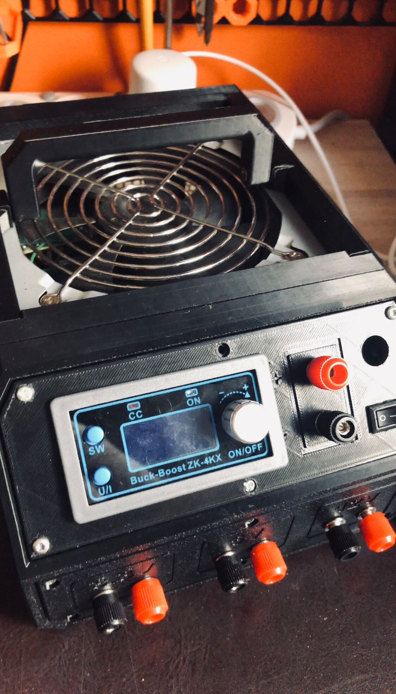
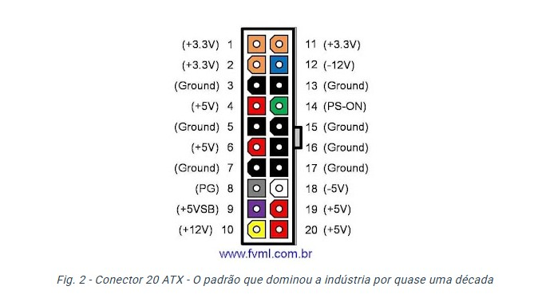
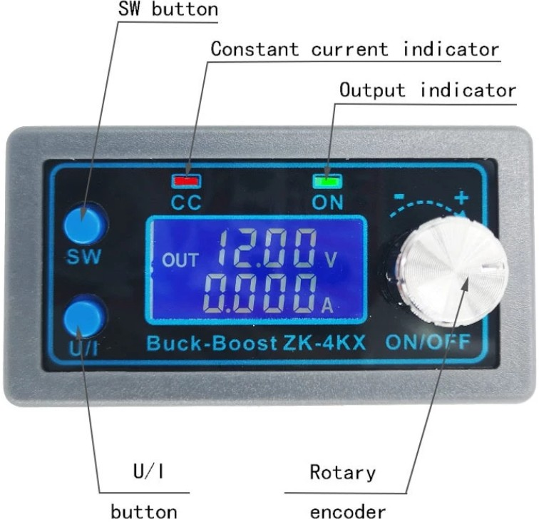

Upgrade de Bancada: Montando uma Fonte de Alimentação ATX com Buck-Boost Ajustável
Como transformar uma fonte de PC antiga em uma ferramenta de P&D potente, com tensões fixas e saída variável de 0 a 30V.
Todo desenvolvedor de hardware sabe que uma fonte de alimentação confiável e flexível é o coração de qualquer bancada de eletrônica. Quando estamos testando um firmware ou validando uma PCB nova, precisamos de linhas de alimentação estáveis e de fácil acesso. Pensando nisso, decidi montar a minha própria **Fonte de Bancada Reaproveitando uma Fonte ATX de Computador**, mas com um grande diferencial: uma saída totalmente regulável de alta capacidade técnica.

As Tensões Fixas: O Feijão com Arroz dos Meus Projetos
Uma das maiores vantagens de reaproveitar uma fonte ATX são as linhas de tensão nativas que ela oferece. Elas cobrem exatamente as tensões que eu mais utilizo no meu dia a dia de projetos de sistemas embarcados:
- 3.3V: A tensão padrão ouro para alimentar os microcontroladores modernos que uso direto em bancada, como o ESP32 e chips ARM.
- 5V: Essencial para alimentar displays inteligentes (Nextion/DWIN), sensores analógicos, relés e barramentos de comunicação TTL.
- 12V: A linha de força perfeita para drivers de motores, ventoinhas de resfriamento e amplificadores de áudio de maior potência.

O Upgrade: Integração com o Módulo CNC Buck-Boost ZK-4KX
Embora as tensões fixas resolvam 80% dos problemas, no desenvolvimento do zero (P&D) frequentemente precisamos de valores específicos como 3.7V para simular baterias de LiPo, ou 24V para circuitos industriais. Para resolver isso, integrei ao projeto um módulo **CNC Buck-Boost ZK-4KX** alimentado diretamente pela linha de 12V da ATX.

Esse pequeno módulo é uma ferramenta fantástica de controle de potência. Ele me permite ajustar a saída de **0 a 30V com corrente regulável de até 4A (limite de 35W)**. A interface digital me dá a precisão necessária para limitar a corrente máxima do circuito, o que salva muitas PCBs de sofrerem um curto-circuito fatal durante o primeiro power-up de teste.
Gabinete e Modelagem 3D
Para deixar a montagem limpa e profissional na bancada, utilizei um case que integra perfeitamente os bornes banana de saída, a chave geral e o módulo ZK-4KX eu alterei a tampa, deixando um espaço maior para o componente na carcaça da própria fonte. Se você quiser montar uma igual para o seu laboratório, o modelo do projeto mecânico está disponível para download.
📦 Download do Arquivo STL Customizado
Baixe diretamente o arquivo da tampa modificada que eu utilizei neste projeto:
Baixar Arquivo .STL📦 Download do Projeto Mecânico (Case 3D)
Você pode baixar os arquivos STL para impressão 3D diretamente no Printables através do link oficial:
Ver Projeto no PrintablesTer uma ferramenta customizada de acordo com as necessidades exatas do nosso fluxo de trabalho é o que diferencia uma bancada eficiente de P&D. Essa fonte combina a alta corrente estável das linhas de PC com o ajuste fino e seguro do módulo Buck-Boost.